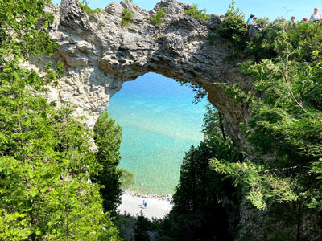
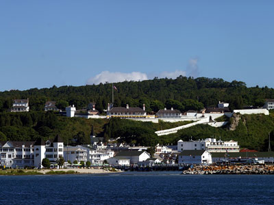
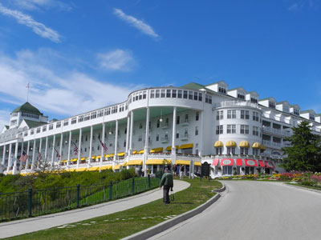
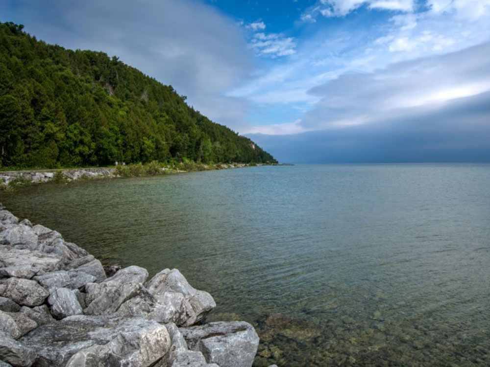
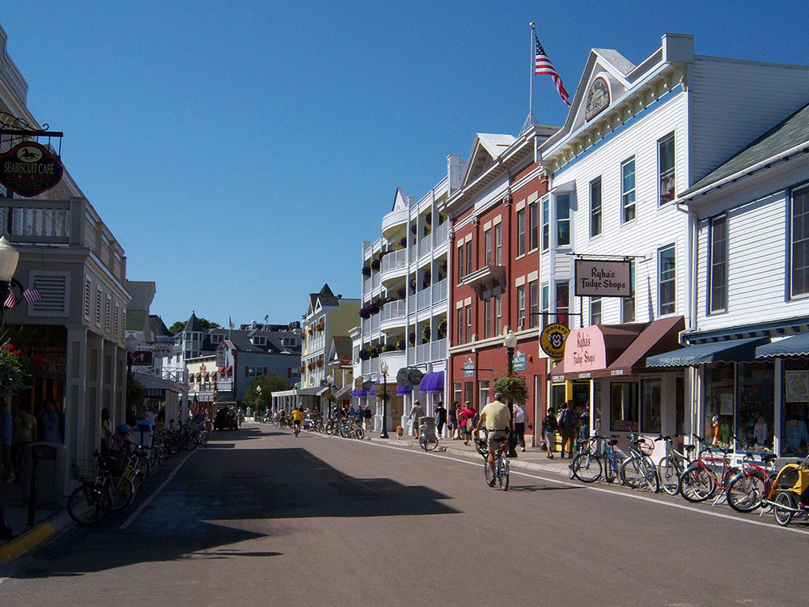
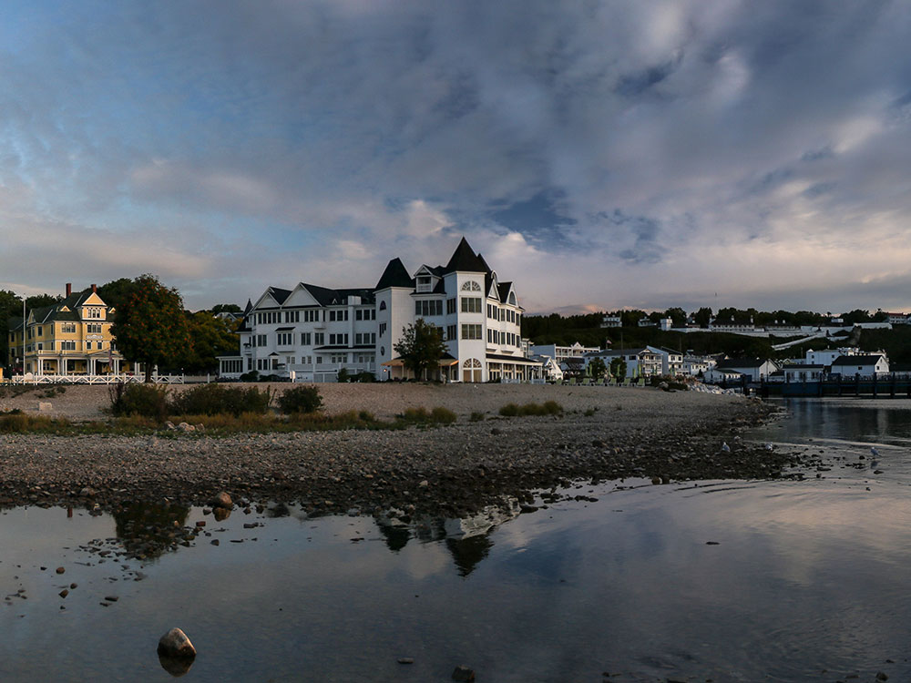

Island and resort area, covering 4.35 square miles in land area located in Lake Huron between Michigan's Upper and Lower Peninsulas
General Information
Most attractions, shops, restaurants, and visitor services operate seasonally from May through October
Mackinac Island State Park Visitor Center: Generally 9:00am–6:00pm during peak season
Ferry transportation required and charged separately
Many attractions, including Fort Mackinac, charge separate admission fees
How to Get There
From Mackinaw City, MI (8 mi): Take a passenger ferry from Mackinaw City to Mackinac Island, arriving at the downtown marina area where visitors can explore the island by foot, bicycle, horse-drawn carriage, or horse-drawn taxi.
Overview
Mackinac Island is one of the most unique destinations in the United States, an 8-mile-around island in Lake Huron between Michigan's Upper and Lower Peninsulas. Long home to Odawa and Ojibwe settlements and a strategic hub of the fur trade, the island is now famous for its Victorian architecture, the historic Fort Mackinac, horse-drawn transportation, world-famous fudge shops, and a near-total ban on motor vehicles in place since 1898.
Fort Mackinac was built by the British during the Revolutionary War and saw two battles in the War of 1812 before the U.S. secured the island. By the late 19th century, Mackinac had become a popular summer resort, and its extensive historic preservation efforts have made the entire island a National Historic Landmark, with more than 80 percent of its land protected as Mackinac Island State Park.
The island's architecture spans more than 300 years, from early French rustic buildings to the Victorian-era Grand Hotel, built in 1887. Other historic sites open to visitors include Fort Mackinac, the fur-trade-era Biddle House and Agency House, the 1829 Mission Church, the oldest surviving church in Michigan, and the Richard and Jane Manoogian Mackinac Art Museum.
Most visitors arrive via ferry from Mackinaw City or St. Ignace, a crossing of less than 30 minutes that passes beneath the Mackinac Bridge; small aircraft service is also available, and snowmobiles can cross an ice bridge in winter. Once on the island, cars are prohibited, and travel is by foot, bicycle, or horse-drawn carriage.
Getting to Mackinac Island
| Transportation | Travel Time | Typical Adult Price | Overview |
|---|---|---|---|
| Shepler's Ferry | 16-26 Minutes | Approximately $39 Round Trip | The most popular ferry service with departures from Mackinaw City and St. Ignace. |
| Arnold Transit Ferry | Approximately 20 Minutes | Approximately $37 Round Trip | Historic ferry operator serving Mackinaw City and St. Ignace. |
| Private Aircraft | Varies | Varies Significantly | Private aircraft may land at Mackinac Island Airport during operating season. |
The average round-trip ferry fare is approximately $38 per adult. Most visitors choose ferry transportation due to its affordability, frequent departures, and scenic crossing of the Straits of Mackinac.
Getting Around Mackinac Island
| Transportation Method | Typical Cost | Best For |
|---|---|---|
| Walking | Free | Downtown attractions, harbor area, shops, and restaurants. |
| Bicycle Rentals | $15-$25 Per Hour or $40-$60 Per Day | Exploring the island perimeter road and interior trails. |
| Horse-Drawn Taxi | Varies by Distance | Transportation between hotels, attractions, and the ferry docks. |
| Horse-Drawn Carriage Tour | $35-$45 Per Adult | Guided sightseeing around the island's major landmarks. |
| Horseback Riding | $60-$120+ | Exploring scenic trails within Mackinac Island State Park. |
Popular Ways to Explore the Island
| Activity | Typical Price | Overview |
|---|---|---|
| Island Carriage Tour | $35-$45 | Guided horse-drawn tour covering many of the island's historic sites and landmarks. |
| Bicycle Around the Island | $40-$60 Per Day | Ride the scenic 8.2-mile shoreline road with spectacular lake views. |
| Fort Mackinac Visit | Separate Admission | Explore the island's most significant historic military site. |
| Horseback Trail Ride | $60-$120+ | Experience wooded interior trails and scenic overlooks. |
| Historic Walking Tour | Free to $25 | Discover Victorian homes, churches, and downtown history. |
Must-Visit Attractions
- Fort Mackinac – Historic military fort overlooking the harbor.
- Arch Rock – One of the island's most famous natural landmarks.
- Main Street – Fudge shops, restaurants, historic hotels, and waterfront views.
- Grand Hotel – Home to the world's longest porch and one of America's most iconic hotels.
- Mackinac Island State Park – Covers much of the island and contains numerous scenic viewpoints and trails.
- British Landing – Historic War of 1812 site and popular rest stop for cyclists.
Average Visitor Transportation Costs
| Category | Average Cost Per Person |
|---|---|
| Round-Trip Ferry Transportation | Approximately $38 |
| Bicycle Rental | Approximately $50 Per Day |
| Horse-Drawn Carriage Tour | Approximately $40 Per Person |
| Horse-Drawn Taxi | Varies by Destination |
| Full-Day Sightseeing Budget | Approximately $75-$125 Per Person |
Best Option for First-Time Visitors
For most first-time visitors, the ideal experience is a round-trip ferry from Mackinaw City or St. Ignace followed by a bicycle rental. Cycling the island's scenic shoreline road provides access to Arch Rock, British Landing, Fort Mackinac, downtown shops, waterfront vistas, and many of the island's most famous attractions while preserving the classic Mackinac Island experience.
Information in this article is based on transportation and fare information provided by Shepler's Mackinac Island Ferry, Shepler's Ferry Service Information, Arnold Transit Company, and published Mackinac Island transportation resources describing ferry access, island transportation options, and visitor services.
This article uses material from the Wikipedia article "Mackinac Island", which is released under the Creative Commons Attribution-Share-Alike License 3.0
Featured Locations and Trails

Andy Gnias, CC BY-SA 4.0, via Wikimedia Commons; Image Size Adjusted

Arch Rock
Natural limestone arch on Mackinac Island

Drdpw, CC BY-SA 3.0, via Wikimedia Commons; Image Size Adjusted

Fort Mackinac
Former British and American military outpost garrisoned from the late 18th century to the late 19th century on Mackinac Island

Hdeon1, CC BY-SA 4.0, via Wikimedia Commons; Image Size Adjusted

Grand Hotel
Historic hotel and coastal resort on Mackinac Island and constructed in the late 19th century, the facility advertises itself as having the world's largest porch






.jpg){kind=link}